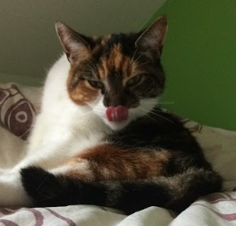

Ik ben Hanna, en ik ben 16 jaar. Mijn hobby's zijn paardrijden, roeien en lezen. Ik houd ook heel erg van katten, ik heb er zelf geen. Maar Flekkie, de kat van de buren komt wel geregeld langs.
Ik heb voor informatica gekozen, omdat het vak mij wel interessant leek en ik wou er graag meer over leren.
Computers worden voor allerlei dingen gebruikt. Het kan onder andere informatie verwerken en opslaan, berekeningen maken en verbinden en gebruik maken van het internet. Computers bestaan niet alleen uit de fysieke delen die ze kunnen zien, maar ook uit software. Software bestaat uit programma’s en besturingssystemen, door daar werken de computers.
